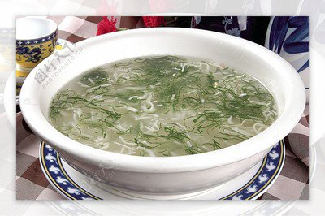

菜品介绍
文思豆腐是一道有着悠久历史的江苏传统名菜，起源于扬州，属于淮扬菜。该菜品选料极严，刀工精细，软嫩清醇，入口即化，同时具有调理营养不良、补虚养身等功效，是老人、儿童选择的上好菜谱。
文思豆腐因其刀工要求极高而闻名，一块细嫩的豆腐，要切成五千根豆腐丝，每根豆腐丝细可穿针，放在清澈的水中，根根清晰、粗细均匀、细如发丝。
刀工技艺
文思豆腐的刀工被誉为中国烹饪刀工的巅峰之作。厨师需要将一块软嫩的豆腐先片成薄如纸张的片，再切成细如发丝的丝。 整个过程要求一气呵成，刀工精准，力度均匀，是淮扬菜"刀工精细"特点的极致体现。
历史背景
文思豆腐至今已有300多年的历史，传说由清代乾隆年间扬州僧人文思和尚所创。清代文人袁枚在《随园食单》中已有记载。
文思和尚在扬州天宁寺修持，由于前往烧香拜佛的佛门居士繁多，寺院的斋菜需求很大，文思和尚便创制了这道豆腐羹，不但做法精细，而且用料丰富，味道鲜美，深受香客喜欢。
制作步骤
1准备豆腐
选用质地细腻的内酯豆腐，先切去老皮，再切成整齐的方块。将豆腐放入清水中浸泡，去除豆腥味。
2切豆腐丝
将豆腐块片成薄片，厚度不超过1毫米。然后将薄片切成细丝，要求粗细均匀，细如发丝。切好后放入清水中轻轻拨散。
3准备配料
将香菇、火腿、鸡胸肉、笋等配料同样切成细丝，要求与豆腐丝粗细相当。
4烹制汤底
用鸡高汤或素高汤作为汤底，烧开后转小火，保持微沸状态。
5组合烹煮
先将配料丝放入汤中焯熟，然后轻轻放入豆腐丝，稍煮即可。用盐、少许白胡椒粉调味，勾薄芡，淋入少量鸡油或香油。
6装盘
将豆腐羹轻轻盛入汤碗，撒上少许香菜末或火腿末点缀即可。

食材清单
主料
- 内酯豆腐 1块(约300克)
配料
- 熟鸡胸肉 30克
- 熟火腿 20克
- 香菇 2朵
- 笋 20克
- 青菜叶 适量
调味料
- 鸡高汤 500毫升
- 精盐 适量
- 白胡椒粉 少许
- 湿淀粉 适量
- 鸡油或香油 少许
营养信息
* 营养信息为每份估算值，实际数值可能因食材和烹饪方式有所不同
烹饪技巧
- 切豆腐丝时，刀要锋利，下刀要稳，力度要均匀
- 豆腐切好后要立即放入清水中，防止粘连和破碎
- 煮豆腐时火候要小，时间要短，避免豆腐丝煮烂
- 勾芡要薄，保持汤羹清澈透明
- 配料丝要与豆腐丝粗细相当，保持整体协调